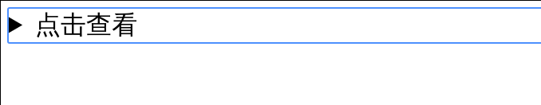
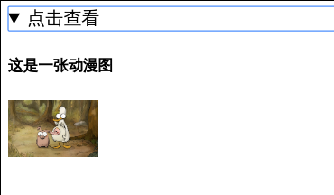
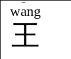
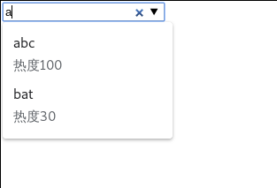
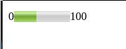
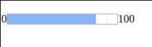
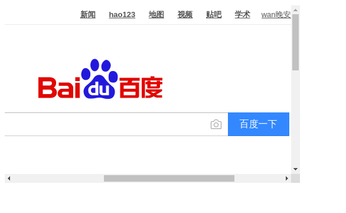

详细的html教程 w3school
常见的新增语义标签
<header>: 页面头部<footer>: 页脚<article>: 定义页面独立的内容区域<aside>: 定义页面的侧边栏内容<details>: 文档某个部分的细节<summary>: 是detail中的标题<figure>: 独立的文档流，在<figure>中定义的内容会自动缩进一部分<figcaption>: 是<figure>的标题<mark>: 重点标记，高亮显示<nav>: 导航连接<ruby>: 加注释<datalist>: 提示框<meter>: 用来表示范围已知且可度量的内容<progress>: 进度条，max指定最大值，value属性指定当前进度<audio>: 播放音频<video>: 播放视频<embed>: 嵌入插件，网页
画布
details
<details>和<summary>联用
<summary>默认为详细信息
1 | <details> |
运行

点击查看后

ruby
- 加拼音，使用
<rt>标签1
2
3<ruby>
汪<rt>w<ruby>a<rt>_</rt></ruby>ng</rt>
</ruby>
运行

datalist
- 和
<input>联用1
2
3
4
5
6
7
8
9
10
11<!--使用list指定数据来源-->
<input type="search" list="mydata"/>
<!--用id指定名称，不是name-->
<datalist id="mydata">
<!--使用value指定提示内容-->
<!--中间的文字是一些其他附属信息-->
<option value="abc">热度100</option>
<option value="bcd">热度70</option>
<option value="emm">热度50</option>
<option value="bat">热度30</option>
</datalist>
运行结果

当键入a时，自动弹出了和a相关的提示
meter
比较大小
1 | 0<meter min="0" max="100" value="40"></meter>100 |
运行

progress
进度条
1 | 0<progress max="100" value="80"></progress>100 |
运行

audio
- 属性
src: 音频地址autoplay: 自动播放controls: 显示控件，比如播放按钮loop: 循环播放可以在开始标签和结束标签之间放置文本内容，这样老的浏览器就可以显示出不支持该标签的信息。
1
2
3<audio src="someaudio.mp3">
您的浏览器不支持 audio 标签。
</audio>
video
- 属性部分同
audiowidth: 设置宽度height: 设置高度poster: 设置封面
embed
定义嵌入的内容，比如插件，网页。
1 | <embed src="/i/helloworld.swf" /> |
运行

成功嵌入了网页，并且可以使用网页的功能
画布
<canvas>标签用于绘制标签，